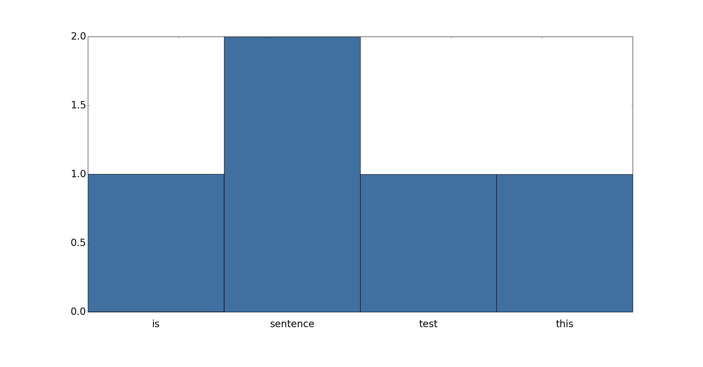
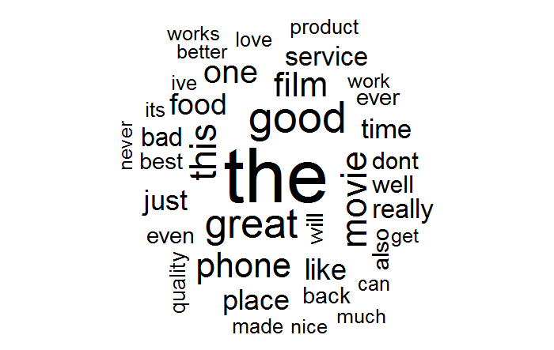

Text Mining Online Reviews for Sentiment Analysis
Fri, 28 Oct 2016
Data Science, Machine Learning
This post aims to introduce several basic text mining techniques. Sample implementations will be explored in the
Scikit-learn library using
Anaconda Python.
Introduction
In data science and machine learning, there is often difficulty in extracting useful features from raw data. Textual data presents an interesting challenge in this regards, especially due to its abundance on the internet. Because of its complexity, natural language is often not directly suited to training a classifier or regressor model. The following section discusses several simple ways to extract useful features from raw text. The dataset containing the raw text that will be used can be
found here.
Feature Extraction
The dataset consists of sentences gathered from Imbd, Amazon, and Yelp reviews. Each sentence is associated with a sentiment score: 0 if it is a negative sentence, and 1 if it is positive. For simplicity, the three files are first combined into a single file. This can be accomplished using a linux simple command:
cat imdb_labelled.txt amazon_cells_labelled.txt yelp_labelled.txt > comb.txt.
A basic function to parse the data is shown in the following block:
#Read sentiment labeled sentences from the specified path
#path: The path to the file containing sentiment labeled text data
#return: A tuple (S, y) where S is an array of sentences and y is an
# array of target values.
def LoadData(path):
#File format is \t
#Parse accordingly
S = []
y = []
#Open file and loop over it line by line
with open(path) as f:
for l in f:
text, sent = l.split('\t')
#Strip any non-ascii characters
text = StripNonAscii(text)
#Parse sentiment score
sent = float(sent)
#Append results
S.append(text)
y.append(sent)
return (S, y)
With the data parsed, the next step is to extract numeric features from it. A simple yet effective way of accomplishing this is to make a vector of word frequencies. The concept of a frequency vector is like that of a histogram or word cloud.

Figure 1: Word Frequency Histogram
In a frequency vector, each component corresponds to the number of times a given word occurs in the corpus. A histogram where each bin contains a single word in the vocabulary is a visual representation of this concept.
Another popular diagram that is related to these concepts is the word cloud. The word cloud plots words with their font size determined by the frequency of their occurance. An example word cloud created from the above dataset is shown below in Figure 2.

Figure 2: Word Cloud of the Dataset
Computing a matrix of word frequencies can be easily accomplished with Scikit-learn using the
CountVectorizer class. The constructor takes many arguments, but useful default are provided for all but one. Some interesting arguments to notes are:
- input: A file, filename, or sequence of string-like objects.
- ngram_range: The range of ngram* sizes to include.
- stop_words: Words that will be ignored (like 'a').
- max_df: Any word occuring more frequently than this number is discarded.
- min_df: Any word occuring less frequently than this number is discarded.
- max_features: The maximum number of terms that will be maintained.
- vocabulary: Explicitly provide a list of words to count and ignore others.
*
Note: An
ngram is a sequence of contiguous words like "the phone" or "favorite movie." The use of ngrams will be explored in a later blog post.
To extract the features with our code so far, the following three lines suffice:
S, y = LoadData('/path/to/directory/comb.txt')
cv = CountVectorizer()
A = cv.fit_transform(S)
#Example use of cv
The following code prints to the screen the top 32 words among all sentences along with the number of their occurances:
V = np.sum(cv.fit_transform(S).toarray(), axis = 0)
D = list(zip(V, cv.get_feature_names(), range(V.shape[0])))
for freq, word, c in sorted(D, key = lambda t : t[0], reverse = True)[0:32]:
print('{:5d}'.format(c) + '{:5d}'.format(freq) + '\t' + word)
An inspection of Table 1 below reveals that the most commonly occuring features do not offer much useful information about the data. The goal is to assign a sentence a sentiment value, but the above words can be reasonably expected to occur both in positive and negative sentences. Their frequency is simply due to the semantics of the English language.
| Number |
Frequency |
Word |
| 1 |
1953 |
the |
| 2 |
1138 |
and |
| 3 |
789 |
it |
| 4 |
754 |
is |
| 5 |
670 |
to |
Table 1: Top 5 Words by Frequency
There are several ways to get around this problem. The most direct approach is to compile a list of
stop words, or words to ignore. Thankfully, Scikit-learn has already implemented this. Simply specify
stop_words='english' in the CountVectorizer constructor. Table 2 below shows the updated results.
| Number |
Frequency |
Word |
| 1 |
230 |
good |
| 2 |
210 |
great |
| 3 |
182 |
movie |
| 4 |
168 |
phone |
| 5 |
163 |
film |
Table 2: Top 5 Words by Frequency with Stop Words
The above list looks better, but it could be better; "movie", "phone", and "film" are most likely not the best words for determining the sentiment of a sentence. As seen above, Scikit-learn offers the ability to supply a custom vocabulary. Intuitively speaking, words with positive and negative connotations like "great", "horrible", and "love" ought to be of highest importance as a features.
To explore this further, consider the dimensionality transform provided by
linear discriminant analysis. By modeling positive sentiment \((1)\) and negative sentiment \((0) \) as classes, a linear transform which maximizes the between-class variance relative to the within-class variance is constructed. Since there are only two classes in this case, the transform matrix reduces the \(n\)-dimensional features to \(1\)-dimensional features and thus will be of dimension \((1, n)\). The components of largest magnitude in this matrix will thus be the directions that most greatly influence the sentiment score. Code to view the top \(m\) components is as follows:
cv = CountVectorizer(stop_words = 'english', max_features=256)
D = cv.fit_transform(S)
lda = LinearDiscriminantAnalysis()
lda.fit(D.toarray(), y)
m = 40
topmfeats = np.abs(lda.coef_[0]).argsort()[-m:][::-1]
for i, j in enumerate(topmfeats):
s = '{:4d}'.format(i) + "\t"
s += '{:16s}'.format(cv.get_feature_names()[j])
s += '{:+5.3f}'.format(lda.coef_[0][j])
print(s)
The results are shown below in Table 3.
| Index |
Word |
Coefficient |
| 0 |
perfect |
+3.458 |
| 1 |
fantastic |
+3.448 |
| 2 |
delicious |
+3.432 |
| 3 |
awesome |
+3.400 |
| 4 |
beautiful |
+3.287 |
| 5 |
enjoyed |
+3.165 |
| 6 |
disappointing |
-3.107 |
| 7 |
liked |
+3.063 |
Table 3: Top Words by LDA Coefficient Magnitude
When considering the sources of the data (Imdb, Amazon, and Yelp), the above results confirm intuition. The sentiment rating is largely influence by words with strongly negative or positive connotations. Further words with positive connotations influence the result in a positive direction (towards \(1\)) while words with negative connotations influence the result in a negative direction (towards \(0\)).
Training and Results
Next, a classifier is trained and results are generated. First, the raw frequencies will be used with a stock logistic regression model. Sample code and results follow.
#Prints testing accuracy results to the screen
#C: The classifier to use
#F: The feature extractor to use
#S: The list of sentences
#y: The target vectors
def RunCVTest(C, F, S, y):
#Fix the random state for better comparison
kf = KFold(len(S), shuffle = True, random_state = 32)
for trn, tst in kf:
#Make sure to only train with the training data
#in a realistic scenario only training data is available at the
#feature extraction stage
F.fit(S[trn])
B = F.transform(S)
#Fit the classifier C
C.fit(B[trn], y[trn])
#Results for cross-validation set
r1 = C.score(B[tst], y[tst])
#Results for training data
r2 = C.score(B[trn], y[trn])
#Both results combined
r3 = C.score(B, y)
s = 'Tst: ' + '{:.4f}'.format(r1)
s += '\tTrn: ' + '{:.4f}'.format(r2)
s += '\tAll: ' + '{:.4f}'.format(r3)
print(s)
#...
#%% A first attempt
S, y = LoadData(DATA_PATH + 'comb.txt')
cv = CountVectorizer()
lr = LogisticRegression()
#Convert to numpy array for indexing ability
S = np.array(S)
y = np.array(y)
print('LogisticRegression: ')
RunCVTestHTML(lr, cv, S, y)
At this point, the results are decent. However, as can be seen from Table 4 below, there is a large discrepancy between the testing and training accuracy scores; the model appears to be over-fitting the training data. This is not overly suprising when the results from Table 1 are considered. If the features contain superfluous information, the model is likely to at least partially fit the superfluous information allowing for high accuracy on the training data but poor generalization ability.
| Test |
Train |
All |
| 79.30% |
98.20% |
91.90% |
| 79.90% |
97.85% |
91.87% |
| 82.10% |
97.95% |
92.67% |
Table 4: Logistic Regression Performance Results
To help reduce the dimensionality of the data, prevent over-fitting, and to slightly improve the results, a custom vocabulary is used. This vocabulary is constructed by using the LDA components of largest magnitude as discussed earlier.
#%% A second attempt with custom vocabulary
S, y = LoadData(DATA_PATH + 'comb.txt')
cv = CountVectorizer(stop_words = 'english', max_features = 512)
D = cv.fit_transform(S)
lda = LinearDiscriminantAnalysis()
lda.fit(D.toarray(), y)
#Determined by exhaustively searching 1 <= m <= 512
m = 213
topmfeats = np.abs(lda.coef_[0]).argsort()[-m:][::-1]
voc = [cv.get_feature_names()[i] for i in topmfeats]
avgs = RunCVTest(LogisticRegression(), CountVectorizer(vocabulary = voc), S, y)
In the above code, only the first 213 words are preserved. Table 5 contains the updated results from the above code.
| Test |
Train |
All |
| 80.50% |
84.40% |
83.10% |
| 80.10% |
83.90% |
82.63% |
| 82.50% |
82.75% |
82.67% |
Table 5: Logistic Regression with Custom Vocabulary Results
As can be seen, there is a modest improvement in the cross-validation performance. Performance on the training data has decreased. This is reasonable as some spurious features have been removed so the potential for over-fitting has been reduced. Finally, some other slight performance improvements can be had by grid searching through the parameters of the feature extractor and classifier.
#Determines locally optimal parameters for the LogisticRegression
#classifier using exhaustive search
#S: The list of sentences
#y: The target vectors of sentiment scores
#voc: The vocabulary to use for CountVectorizer
#ret: The locally optimal classifier
def FindBestParams(S, y, voc):
#This will take a long time to run!
params = {'penalty':('l1', 'l2'), 'intercept_scaling':np.arange(0.1,10.1,0.1), 'C':np.arange(0.1, 10.1, 0.1)}
cv = CountVectorizer(vocabulary = voc)
gscv = GridSearchCV(LogisticRegression(), params)
gscv.fit(cv.fit_transform(S), y)
return gscv
#...
gscv = FindBestParams(S, y, voc)
lr = gscv.best_estimator_
RunCVTest(lr, cv, S, y)
The final results are shown below in Table 6.
| Test |
Train |
All |
| 80.60% |
84.80% |
83.40% |
| 80.80% |
84.55% |
83.30% |
| 84.60% |
83.10% |
83.60% |
Table 6: Tuned Results for Logistic Regression
Further improvements in the size of the data and the performance of the model can probably be had by further tuning of the parameters.
Conclusion
Vectors of word frequencies are a basic type of feature that can be extracted from textual data. Despite the simplicity of the feature, reasonable performance can be achieved. A future blog post will explore some slightly more sophisticated methods available in Scikit-learn and possibly other libraries. I hope to see you then.